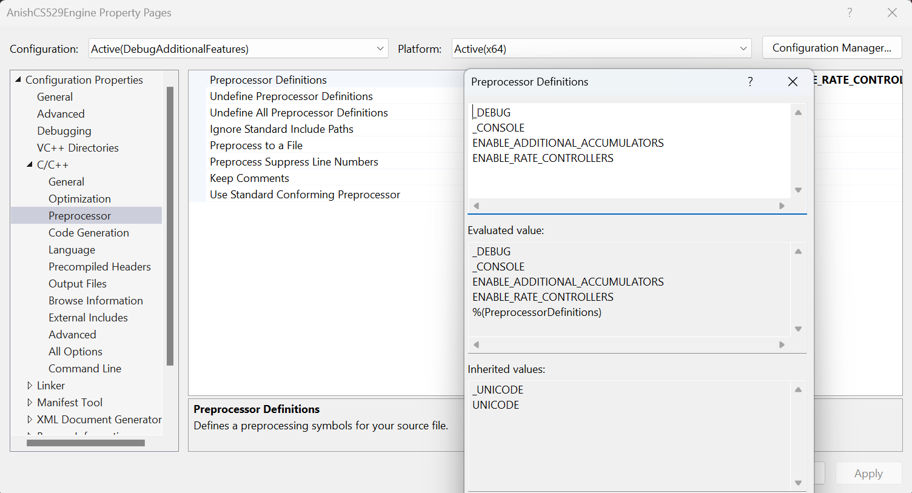

|
AnishCS529Engine
Custom game engine made for class CS529
|
The engine supports extra features that are being experimented on and aren't enabled by default.
To enable these features, you must make use of preprocessor definitions.
You can find these under Project -> Properties -> C/C++ -> Preprocessor -> Preprocessor Definitions

This enables creation of any number of extra accumulators.
Accumulators get updated on every endFrame() call. It can be used when we need to know the number of times some logic should run asyncronously.
Enabling additional accumulators adds additional code to the endFrame() logic and should be used only if needed.
This enables creation of any number of rate controllers.
Rate controllers are separate timers that are used to check if at least the designated rate has elapsed since last successful fire.
This is low budget since it does not get updated every frame, and instead only calculates when asked.
This can be expanded to have the functionality of an accumulator. Tradeoff: This method has longer calc time during checking, but it has lesser impact on endFrame().
Possible direction: We could extend this to have a callback function that we can trigger in the endFrame() loop.